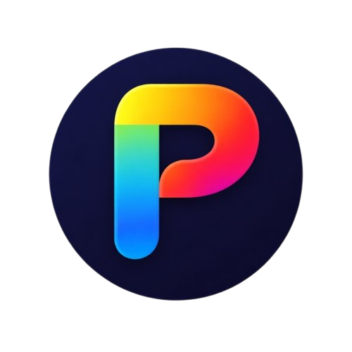

An Arch-based Linux distribution built for speed, simplicity, and visual polish. GNOME desktop, Plymouth boot splash, and zero bloat.
Download the ISO, write it to a USB drive, and boot into the live environment. No installation required.